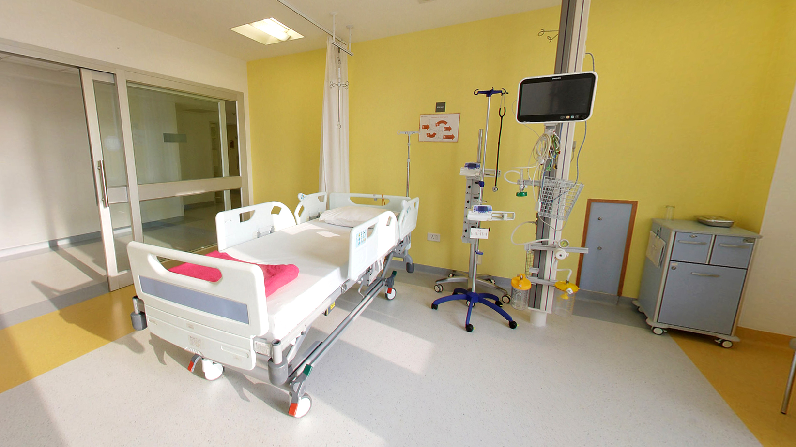
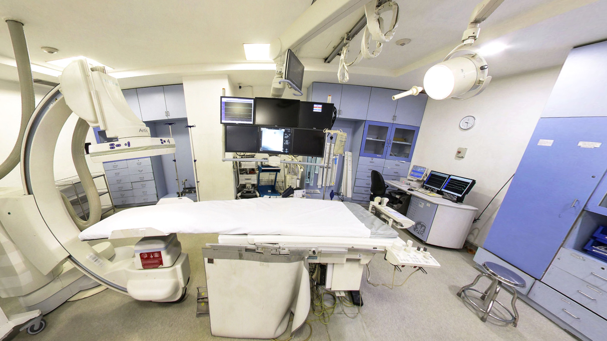

Critical Care Unit
We have skilled doctors working with high end
technologies
- Expertise of anaesthesiologists, surgical intensivists and respiratory therapists
- Equipped to handle all kinds of medical eventualities
- Highly trained anaesthesiologists provide safe, consistent and continuous pre-operative care
- 1:1 patient-to-nurse ratio, trained by critical care doctors

Strict protocols to deliver consistent & quality
care
- Admission, discharge & triage protocols
- Ailment related protocols
- Dietary & nutrition protocols
- Equipment management protocols

Specially planned infrastructure to support critical
patients !!!!
- 300 Huntleigh ICU beds air mattresses with anti bed sores technology
- 39 Operation Theatres with state-of-the-art technology
- Dedicated ICU for different sub-specialities
- Window view for all beds to reduce ICU psychosis